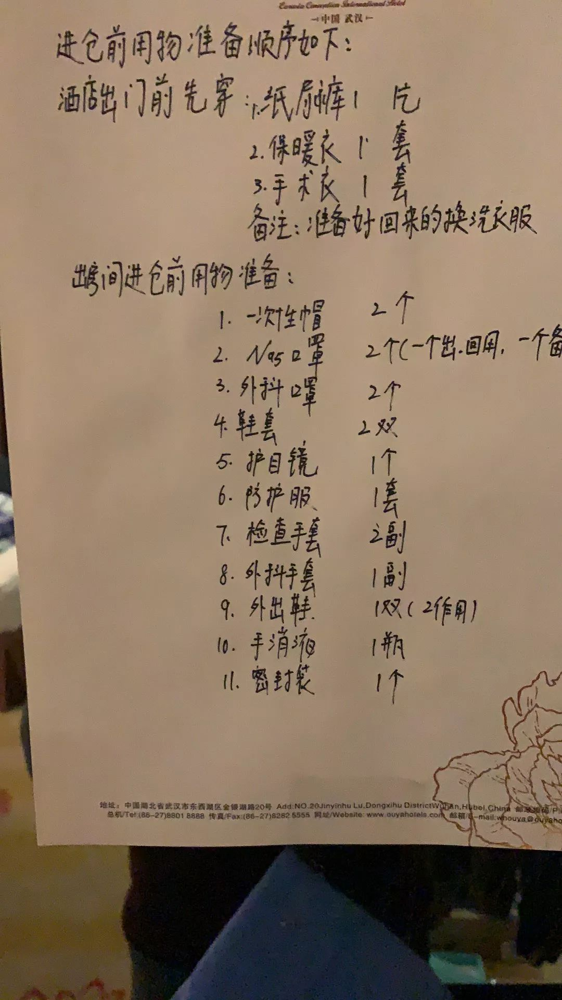

回武汉第二天封城、发烧，一个青年导演的自救口述
原文链接 备份链接 *************▲*************1月29日，钱珵戴着用文件袋改装的面罩，在医院抽完血后自拍。 （受访者供图/图） 全文共4492字，阅读大约需要10分钟。 这次疫情有影响到我最近写剧本的内容， …
三、暖心
整个广东医疗队大部分成员都是在2月9号凌晨到2点之间被确定参加援鄂医疗队，8点就要整装出发，所以不仅是个人的生活物资，医院准备的医疗物资都难以在这么短时间内备齐，这导致很多地市的医疗队都是带着点生活用品就匆匆赴任。截至12号WH每天新增确诊患者一千例以上，按照上级要求所有确诊患者都要进方舱医院，这就造成每隔几天就有一个新舱建立的现实，即使有全国海量的医疗物资供应，也难以满足临床的需求。随着工作安排的逐步明朗，我们在物资紧缺的情况下，被要求每个人备齐入舱物资（下图是物资清单），以保证能够入舱。省队的领导说会积极协调，但是这个时候也要拼娘家的实力。
面对海量的物资需求，大伙都懵了。队伍商量之后便向市局求援，12号中午发出的信息，下午我们所属的三家医院便动员起来，民间也不知道在哪收到的风，我一个朋友的朋友的朋友，到现在都不知道名字，一口气就捐赠了500个护目镜，然后通过这位朋友的呼吁，又拉来一批物资。这些物资，用到这就是我们的保障，大恩不言谢。

顺便呼吁一下，在这个N95口罩紧缺的时期，非疫区非医疗场所的，带个普通口罩就够了，把资源让给医护人员；如果您的手头有物资，卖给医院捐给医院都行。有句话怎么说的：大家不要挤，不要挤，让列宁同志先过。
四、出发前
我9号晚上12点左右啃着鸡翅膀接到科主任电话，这个点的电话肯定是急事，我老婆立马猜到什么事瞬间就哭了，电话那边我说：自己目前下乡，属于闲置人员，又有急诊ICU的经验，如果有需要就上呗，但我先和家里商量下。商量的事其实没什么悬念，家里难受归难受，大是大非面前也没法反对。
作为一个资深膜粉，我不禁想起江先生从沪上赴任海里说的那段话；我一个小医生，怎么就突然跑那么远去上班呢？
凌晨一点半，接到正式通知，组织决定了：就是你。大半夜的，家里都动员起来，给我准备行李，偏南一隅的城市，四季温暖，没啥过冬的衣物，家里所有的羊毛保暖内衣都给我装进去。媳妇想起我之前买了几只肌注球蛋白打算给孩子用的，叫我赶紧先用了；于是家里人帮我整行李，我跑到医院打针，整整6毫升，打完半边腿麻了半小时。是夜，凌晨三点多才睡着了。
第二天七点，匆匆赶往医院，同事们不论认不认识的见面都给我报了一下，也有人悄悄塞了各种东西口罩手套吃穿用度啥都有。一个简短的仪式，我说：我辈所受教育从来是家国天下，人心向背。之后在九点再赶赴卫健局，简单地合影仪式后便乘车前往广州白云机场，车程五百多公里。颇有点八千里路云和月的意思。
 今晚两点到明晨8点第一次上班，暂时就写到这。下班的时间为防止交叉感染，都只能呆房间里，估计会有很多时间码字的。
今晚两点到明晨8点第一次上班，暂时就写到这。下班的时间为防止交叉感染，都只能呆房间里，估计会有很多时间码字的。
原文链接 备份链接 *************▲*************1月29日，钱珵戴着用文件袋改装的面罩，在医院抽完血后自拍。 （受访者供图/图） 全文共4492字，阅读大约需要10分钟。 这次疫情有影响到我最近写剧本的内容， …
原文链接 备份链接 嘉秋上一条关于自己的朋友圈，还定位在新年伊始的北极圈：冰川被雪覆盖，深蓝色的浪涛拍打着甲板，有种凄切的声响。嘉秋写道，“船长告诉我，今天对挪威人来说其实是个好天气。Life is hard，life is always …
原文链接 备份链接 医院人员领取志愿者送的医疗物资。受访者供图 文 | 李晓芳 编辑 | 胡大旗 新型冠状病毒肺炎疫情扩大后，湖北省内的医院医疗物资告急。从1月23日开始，很多医院自行发布物资募捐公告。几乎同一时间，各种民间力量行动起来， …
原文链接 备份链接 图片来源：海洛创意 记者：梁宙 “ 武汉一线医护人员物资仍有较大缺口，湖北省卫生计生宣传教育中心通过官方微信公号“健康湖北”发布了武汉各大医院的接受社会捐赠公告。其中，有的医院求援公告已更新至第五版。 ” 武汉一线医护 …
原文链接 备份链接 1月23日，武汉市公共交通停运。一些本地的私家车主决定为医务人员护航，免费接送他们上下班，并运送救援物资到各大医院。34岁的车车便是其中一员。 文 | 吴美芬 从1月底开始，车车几乎跑遍了武汉每一个医院，为医护人员送 …